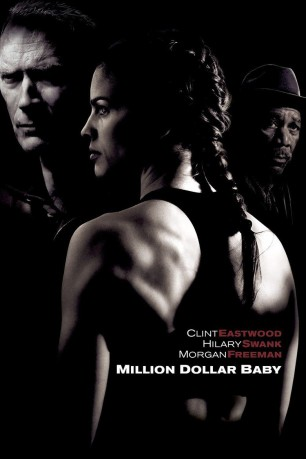
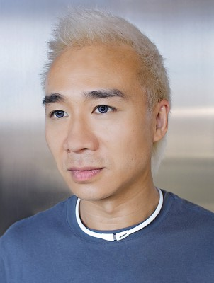
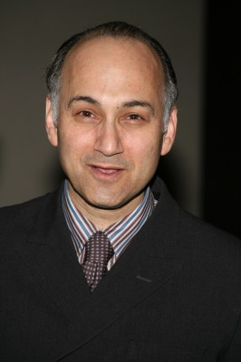

#1307 Million Dollar Baby
Auszeichnungen: 4 Oscars gewonnen für 3 Oscars nominiert 2 GoldenGlobes gewonnen
 
 IMDB-Wertung: 8.1 / 10
IMDB-Wertung: 8.1 / 10  IMDB-TOP-Platzierung: 199
IMDB-TOP-Platzierung: 199  Metascore: 86
Metascore: 86 
Frankie Dunn hat sein Leben lang viele unglaubliche Kämpfer im Ring trainiert. Die wichtigste Regel, die er seine Boxer lehrt, ist die, die sein eigenes Leben bestimmt: Vor allem andere, schütze dich selbst! Im Zuge einer schmerzvollen Entfremdung von seiner Tochter hat Frankie niemanden mehr an sich herangelassen. Sein einziger Freund ist Scrap, ein ehemaliger Boxer, der sich um das Studio kümmert und weiß, dass unter Frankies rauher Schale ein warmherziger Kerl steckt.
Jahr: 2004
Dauer: 132 Minuten
FSK: 12
Land: USA Studio: Warner Bros.Tonspuren: DTS - ,
Untertitel:
Auflösung: 1080p (1920x800) Größe: 12390 MB
Genre: Drama, Sport
Regisseur:  Clint Eastwood
Clint Eastwood
Drehbuch: Paul Haggis, F.X. Toole
Soundtrack: Clint Eastwood
Darsteller:
 Clint Eastwood als Frankie Dunn
Clint Eastwood als Frankie Dunn Hilary Swank als Maggie Fitzgerald
Hilary Swank als Maggie Fitzgerald Morgan Freeman als Eddie Scrap-Iron Dupris
Morgan Freeman als Eddie Scrap-Iron Dupris Jay Baruchel als Danger Barch
Jay Baruchel als Danger Barch Mike Colter als Big Willie Little
Mike Colter als Big Willie Little Brían F. O'Byrne als Father Horvak
Brían F. O'Byrne als Father Horvak Anthony Mackie als Shawrelle Berry
Anthony Mackie als Shawrelle Berry Margo Martindale als Earline Fitzgerald
Margo Martindale als Earline Fitzgerald- Riki Lindhome als Mardell Fitzgerald
 Michael Peña als Omar
Michael Peña als Omar Benito Martinez als Billie's Manager
Benito Martinez als Billie's Manager Bruce MacVittie als Mickey Mack
Bruce MacVittie als Mickey Mack Joe D'Angerio als Cut Man
Joe D'Angerio als Cut Man- Marcus Chait als J.D. Fitzgerald
- Tom McCleister als Lawyer
- Erica Grant als Nurse
- Naveen als Pakistani
- Morgan Eastwood als Little Girl in Truck
-  Jamison Yang als Paramedic
- V.J. Foster als Ref #3
- Marty Sammon als Ref #5
- Steven M. Porter als Ref #6
 Ming Lo als Rehab Doctor
Ming Lo als Rehab Doctor Miguel Pérez als Restaurant Owner
Miguel Pérez als Restaurant Owner- Jim Cantafio als Ring Doctor #1
-  Ned Eisenberg als Sally Mendoza
- Marco Rodríguez als Second at Vegas Fight
- Brian T. Finney als Irish Fan #1
- Spice Williams-Crosby als Irish Fan #2
- Kim Strauss als Irish Fan #3
- Kirsten Berman als Irish Fan #5
- Susan Krebs als Rehab Nurse
- Nina Avetisova als VIP Girl , uncredited
 Michael Bentt als Boxer , uncredited
Michael Bentt als Boxer , uncredited- Bruce Gerard Brown Jr. als Boxer , uncredited
 Jude Ciccolella als Hogan , uncredited
Jude Ciccolella als Hogan , uncredited- Kimberly Estrada als Perez , uncredited
- Guillermo Jorge als Cutman , uncredited
- Sean LoGrasso als Fight Fan , uncredited
- Maher McClung als Irish Fan , uncredited
- Sean O'Kane als Additional Voices , uncredited
- Ricky Pak als Las Vegas Bout Timekeeper , uncredited
- Vladimir Rajcic als Yugoslavian Judge , uncredited
- Michael Saglimbeni als Fan , uncredited
- Jason Williams als Las Vegas Fight Fan , uncredited
- Lucia Rijker als Billie 'The Blue Bear'
- David Powledge als Counterman at Diner
- Dean Familton als Ref #1
- Louis Moret als Ref #2
- Jon D. Schorle II als Ref #4
Datei: X:\2004(G-M)\Million Dollar Baby (2004, FSK12, 1920x800).mkv seit 18.06.2015
Festplatte: HD 2003-2004-2005(A-F)
 Es gibt insgesamt 41 Filme in der Gruppe '2004(G-M)'
Es gibt insgesamt 41 Filme in der Gruppe '2004(G-M)'